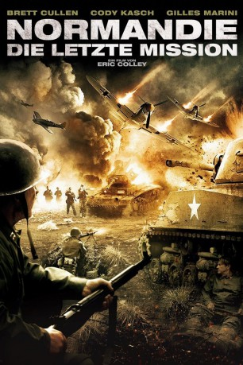

#7499 Normandie - Die letzte Mission
Alternativ: The Last Rescue
 
 IMDB-Wertung: 5.2 / 10
IMDB-Wertung: 5.2 / 10  Metascore: 0
Metascore: 0 
1944: Private James Lewis kämpft an der französischen Front gegen die deutschen Wehrmachtsmächte. Als er während einer Schlacht einen Moment zu lange zögert, bringt er jedoch seinen befehlshabenden Offizier Captain Beckett in Gefahr. Beckett wird umgehend ins Feldlazarett gebracht, wo man verzweifelt versucht, ihm das Leben zu retten. Ausgerechnet in dem Moment dringen deutsche Soldaten in die Krankenstation ein und nehmen die Alliierten gefangen. Zwar gelingt während eines amerikanischen Angriffs bereits kurze Zeit später die Flucht, doch Lewis und Beckett sitzen nun hinter den feindlichen Linien fest und Beckett schwebt immer noch in Lebensgefahr. Lewis versucht sein Möglichstes um Beckett am Leben zu erhalten und wieder in sicheres Terrain zu gelangen. Es beginnt eine gefährliche Reise.
Jahr: 2015
Dauer: 106 Minuten
FSK: 16
Land: USA Studio: MPI Home VideoTonspuren:
Untertitel:
Auflösung: 1080p (1920x1080) Größe: 5386 MB
Genre: Action, Drama, Krieg
Regisseur: Eric Colley
Drehbuch: Sean Gleaves
Soundtrack:
Darsteller:
 Brett Cullen als Captain Beckett
Brett Cullen als Captain Beckett- Cody Kasch als Pvt. James Lewis
- Gilles Marini als Bruno Travert
 Ryan Merriman als Paratrooper Griggs
Ryan Merriman als Paratrooper Griggs Johann Urb als Feldgendarm Hans Graf
Johann Urb als Feldgendarm Hans Graf- Elizabeth Rice als 2nd Lt. Nancy Bell
- Darren Keefe Reiher als Lt. Maxwell
- Hallie Shepherd als 1st Lt. Vera Cornish
 Tony Doupe als SS-Oberführer Hesse
Tony Doupe als SS-Oberführer Hesse- Tino Struckmann als Dittrich
- Fred Griffith als Doctor
- Dawson Doupé als Feldgendarm Tobias Keller
- Daniel Magill als Paratrooper Fisher
- Eric Colley als Lt. Bill Nelson
- David Kilgo als German in Woods
- Jason Benjamin als German with Bayonet
- Frank Arend als German Soldier
- Benjamin Reed als Pvt. Anderson
- Corey Burks als Pvt. George
- Sean Barber als Horst
- Charlie Corella als Pvt. Campbell
- John Blair Richards als German in Trench
- Robert G. Colley als Fellow Private
- Mitchell Batten als American / German Soldier
- Kendrick Blinn als American Soldier
- Burke Bolinger als American / German Soldier
- Jack Bolinger als American Soldier
- Dillon Borel als American / German Soldier
- William Borre als German Soldier
- Gage Bradbury als German Soldier
- Charles Breeden Jr. als German Soldier
- Charles Breeden Sr. als German Soldier
- Caleb Breeden als German Soldier
- Mark Chapman als German Soldier
- Kellans Copell als American / German Soldier
- Justin Courville als American / German Soldier
- Aidan Devillier als American / German Soldier
- Chip Dobson als American Soldier
- Paul Dolle als German Soldier
- Raphael Edmond als American Soldier
- David Effler als German Soldier
- Rob Effler als American / German Soldier
- Steve Effler als German Soldier
- Joshua Ellerson als German Soldier
- Shelby Ellerson als German Soldier
- Blake Enfinger als German Soldier
- Eric Fraser als American / German Soldier
- Joshua Halverson als American Soldier
- Chase Hargrove als American / German Soldier
- Ronald Harrison als American Soldier
Datei: X:\2015(N-Z)\Normandie - Die letzte Mission (2015, FSK16, 1920x1080).mkv seit 15.11.2017
Festplatte: HD 2015(A-Z)
 Es gibt insgesamt 161 Filme in der Gruppe '2015(N-Z)'
Es gibt insgesamt 161 Filme in der Gruppe '2015(N-Z)'